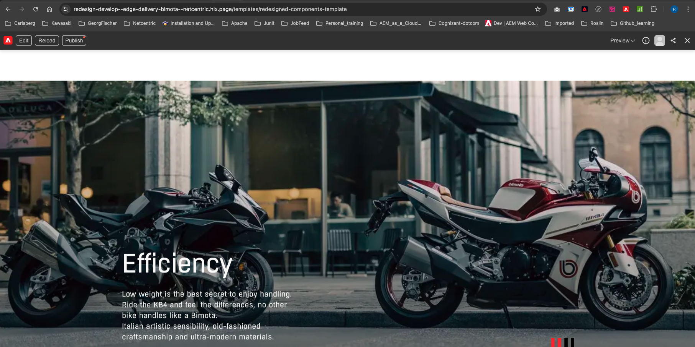

/content/bimota-training/blocks/highlight
Layout & content
Verified guide
4 min read
Highlight
Scroll-animated image + headline + description callouts, with configurable animation timing.
This component can be used on Product Pages or any content pages where you'd like to showcase highlights. It needs an image, a headline, and a description for each highlight, and holds a scroll-triggered animation behavior.
Adding the block to a page
Two ways to add it:
- Copy from an existing page — open an existing page under your respective country folder that already has a Highlight block and copy it.
- Use the Library — in da.live, click Library in the block toolbar, then choose Highlight from the list of available blocks.
Seeing it in action
The animation as the visitor scrolls can be seen in this reference video: highlights-component.webm (ask your development contact for a copy if you'd like to see it before publishing).
What you fill in
| Block variant: Highlight (time-N) | N sets the scroll animation duration in seconds — e.g. Highlight (time-2) or Highlight (time-7). The animation time is configurable this way. |
| Image row | One shared image the highlights animate over. |
| Headline | The title for each highlight point, e.g. “Efficiency”. |
| Description | Supporting text under each headline. |

The Highlight block rendered live — shared background image with an animated 'Efficiency' headline and description.
Copy/paste snippet
| Highlight (time-2) | | |---|---| | <<add image here>> | | | <<Headline>> | | | <<description>> | | | <<Headline>> | | | <<description>> | | | <<Headline>> | | | <<description>> | |
Verified module. Written from Highlights Block guide (internal PDF).